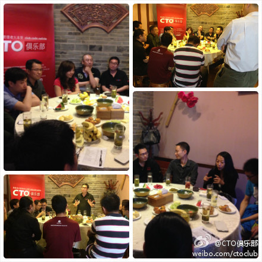

//@音速_越减越肥的胖子:死得早，不耽误二婚！天天加班，不影响外遇！姑娘们赶紧拿起电话，千万别错过啊！ //@寒冬winter:死得早这么重要的特性居然不提，亲爱的姑娘们，嫁给我说不定十来年就能拿遗产啦，心动不如行动，现在就拿起电话…… //@明正你是好人:本人即是资源，欢迎私信@潘欣怡:朋友说，阿里巴巴的技术男可吃香了，你知道为什么吗？答案是：钱多、人傻、好管理。
遇到人态度忽冷忽热，受挫之余，觉得对方挺变态的。其实想了想，我对同一个人的态度，也会有时热情，有时严厉，有时冷谈，有时又不正经，但我的态度与对方的行为和我的理由都是匹配的。我觉得对方变态，是因为这其中完全无规律可循。
整整三个小时，讨论一直很热烈，从创业聊到云计算和比特币，很有收获。@CTO俱乐部:CTO俱乐部第98期下午茶活动已经圆满结束了，感谢各位@Ada李力 @CSDN闫辉 @段东旭-Jeff @恺墨@Born白清杰（没有提到的可以@哈）的参与，大家对创业想法还是蛮多的啊，现场氛围很是热烈，尤其后面对云计算方面的讨论成为了热点~@我就是李茗，我们以后会多多举办这样的小型聚会供大家更多的交流。 
聚会照片已经传到微信群里了。李茗在阐述观点之前，会先厘清概念，听了很受益。//@我就是李茗:今天与各位交流很受益，观点碰撞激烈，真理越辨越明，激情却也不失理性…@CTO俱乐部:CTO俱乐部第98期下午茶活动已经圆满结束了，感谢各位@Ada李力 @CSDN闫辉 @段东旭-Jeff @恺墨@Born白清杰（没有提到的可以@哈）的参与，大家对创业想法还是蛮多的啊，现场氛围很是热烈，尤其后面对云计算方面的讨论成为了热点~@我就是李茗，我们以后会多多举办这样的小型聚会供大家更多的交流。
多谢鼓励。 //@段东旭-Jeff:这种方式比以前的效果要好很多 //@我就是李茗:今天与各位交流很受益，观点碰撞激烈，真理越辨越明，激情却也不失理性…@CTO俱乐部:CTO俱乐部第98期下午茶活动已经圆满结束了，感谢各位@Ada李力 @CSDN闫辉 @段东旭-Jeff @恺墨@Born白清杰（没有提到的可以@哈）的参与，大家对创业想法还是蛮多的啊，现场氛围很是热烈，尤其后面对云计算方面的讨论成为了热点~@我就是李茗，我们以后会多多举办这样的小型聚会供大家更多的交流。
回复@猫九妞_416:读书是输入，而做是输出。想只是中间状态。看人，看事情，都是看输出，看结果，不会看输入和中间状态。 //@猫九妞_416:读书也是一种变相的做呀。@Ada李力:杨绛在解答一个年轻人的困惑时说: "你的问题在于读得太少，而想得太多。" ── 我倒觉得很多人的情况是: 想得太多，而做得太少。
你所知道的失败，都是成功者曾经的失败。那些失败后就销声匿迹的太多了，而你只是不知道。硅谷鼓励的是冒险，不是鼓励失败。最尊重失败者的说法，我还没听说过。//@Justin麒麟:国人成王败寇的思想严重，如果结果失败了后果很严重，所以做之前瞻前顾后不敢行动，听闻硅谷最尊重失败者因为他们敢于尝试@Ada李力:杨绛在解答一个年轻人的困惑时说: "你的问题在于读得太少，而想得太多。" ── 我倒觉得很多人的情况是: 想得太多，而做得太少。